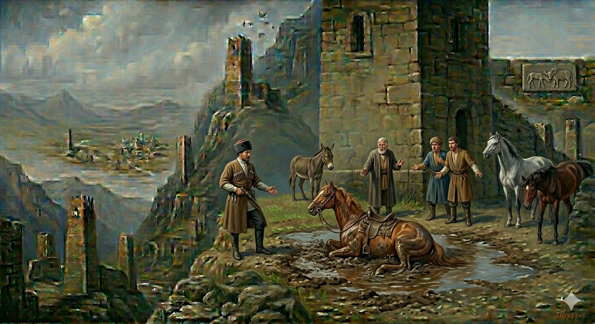

И.А. Дахкильгов. Хьехаме дувцарш - поучительные рассказы-притчи.
И.А. Дахкильгов. Хьехаме дувцарш - поучительные рассказы-притчи. Из ингушского фольклора.

Бакъилгах менна шура
ПхьегӀий тӀа багӀача наха бӀаргавейнав воагӀаш вола цхьа говрабаьри. ЦӀаьхха баьречун кӀалхара говра гораяхай, баьри Ӏоийккхав. Наькь юккъе боккха тӀарш а баьнна, еррига яржа колд хиннай. Цу тӀаршала, колдала дӀакерча-хьакерча йолаеннай говр. Юстара а ваьнна, дӀаэтта латташ хиннав баьри. Цу тайпара дола хӀама говро духьашха даь доацачоа тара дар, хӀана аьлча, говра Ӏаббалца яхаш санна латташ вар говрабаьри. ПхьегӀий тӀара цхьанне цӀогӀа техад: - Ер фуд хьа? Говра хул колдийла керчаш? Йоккха тамаш ма йий ер-м! - Тамаш е езаш хӀама дац, - аьннад говрабаьречо, - ер говра бакъилгах йолча хана гамажа шура а мелаеш, кхеяь хиннай. Цудухьа колди тӀарши массаза гу, ер шоана гуш дола сурт оттаду укхо.
РУССКИЙ
Жеребчиком выпитое молоко
По селу ехал всадник. Вдруг на виду у всех его конь начал падать на колени. Всадник соскочил и остановился в сторонке. Там была грязная лужа. Конь начал кататься в ней. Кто-то из сельчан крикнул: - Что мы видим? Разве лошади валяются в грязи и в лужах. Удивительное дело! - Ничего удивительного в этом нет, - ответил всадник, - когда этот конь был жеребчиком, его поили буйволиным молоком. Поэтому, как только он завидит грязь и лужу, он делает то, что вы видите.
ENGLISH
The milk that the foal had drunk
A horseman rode through the village. Suddenly, in full view of everyone, the horse began to buckle at the knees. The rider jumped off and moved to one side. There was a muddy puddle there. The horse began to roll around in it. One of the villagers shouted: - What on earth is this? Do horses usually wallow in mud and puddles? What a strange sight! - There's nothing strange about it, - replied the horseman, - when this horse was a foal, he was fed buffalo milk. That's why, as soon as he sees mud and puddles, he does what you see.
НОХЧИЙН
Бокъах мелла шура
Пхьоьханехь бохкучу нахана гина вогӀуш волу цхьа говран бере. ЦӀаьххьана беречун кӀелхьара говр горахӀоьттина, бере охьаиккхина. Некъ йуккъе боккха ткъарш а баьлла, берриг баьржина хатт хилла. Цу ткъарше, хотте дӀакерча - схьакерча йолайелла говр. Йистах а ваьлла, дӀахӀоьттина лаьтташ хилла бере. Цу тайпане долу хӀума говро дуьххьара деш доцучух тера дар, хӀунда аьлча, говр Ӏаббалц воллуш санна лаьтташ вар говран бере. Пхьоьханера цхьамма цӀогӀа тоьхна: - ХӀара хӀун ду хьан? Говр хуьлу хоттал керчаш? Боккха тамаша ма бай хӀара-м! - Тамаша бан безаш хӀума дац, - аьлла говран беречо, - хӀара говр бокъах йолчу хенахь гомашан шура а мийлош, кхиийна хилла. Цундела хоттан ткъарш мосазза го, хӀара шуна гуш долу сурт хӀоттадо хӀокхуо.
ПОГОВОРКИ
Вираца лаьтта Ӏаса вирах Ӏийхад. Теленок, выросший с ишаком, стал кричать по-ишачьи. A calf raised with a donkey began to bray like a donkey.Гамажа шура мийна бакъилг колдийла кийрчай. Жеребчик, вскормленный буйволицей, любит валяться в грязи. A foal nursed by a buffalo cow loves to wallow in the mud.Лай саг, ше мел вах, цкъа мукъа Ӏергвац е вирах ца Ӏаьхача, е демийле ца керчача. Неблагородный за всю свою жизнь хотя бы раз, но заорет по-ослиному или начнет валяться в пыли (совершит неблагородный поступок). A base person will, at least once in their lifetime, bray like a donkey or start wallowing in the dust (commit a base act).Оасар овланца мара дӀадоаккхалац. От сорняка избавишься, только вырвав его с корнем. You can only get rid of a weed by pulling it up by the roots.Овлага хьежжа хул буц, шурийга хьежжа хул саг. Каков корень, такова и трава; каково материнское молоко, таков и человек. As the root is, so is the grass; as the mother’s milk is, so is the person.Ханнахьа дӀадийнар ханнахьа тӀадоал, бера хана Ӏомадаьр хьалкхийча накъадоал. Вовремя посеянное вовремя созрело, в детстве выученное на всю жизнь сгодилось. What is sown in good time ripens in good time; what is learnt in childhood serves one for a lifetime.Хьакха ушал корайоагӀа. Свинья всегда найдет грязную лужу. A pig will always find a muddy puddle.Хьакхий шура мийначох хьакхий оамалаш йоахк. Вскормленный свиным молоком приобретает свинские повадки. One who is brought up on pig’s milk acquires the habits of a pig.Шера цкъа вира дулх ца диача, берзана гирдз доал. Если волк в год раз не поест мяса ишака, его одолевает чесотка. If a wolf does not eat donkey meat once a year, it is overcome by scabies.Шурийца Ӏомабаь мотт валлалца бицбеннабац. Язык, выученный с молоком матери, не забывается до кончины. A language learnt with one’s mother’s milk is never forgotten until death.